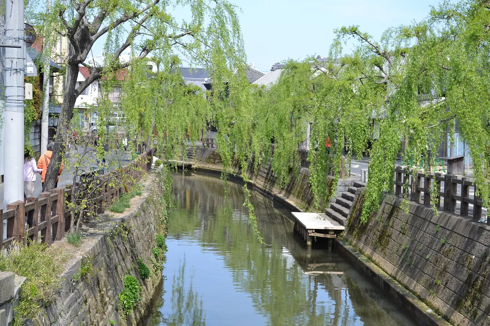
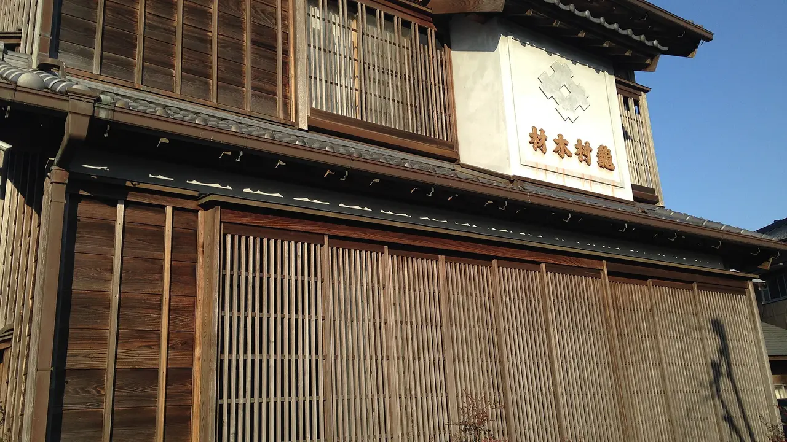
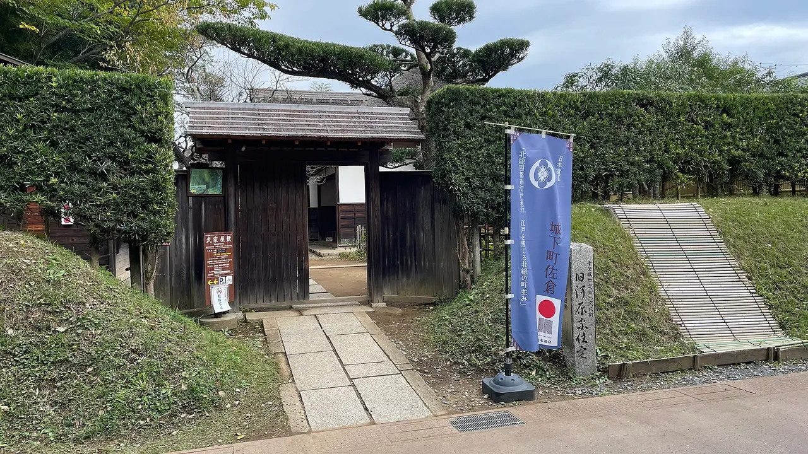
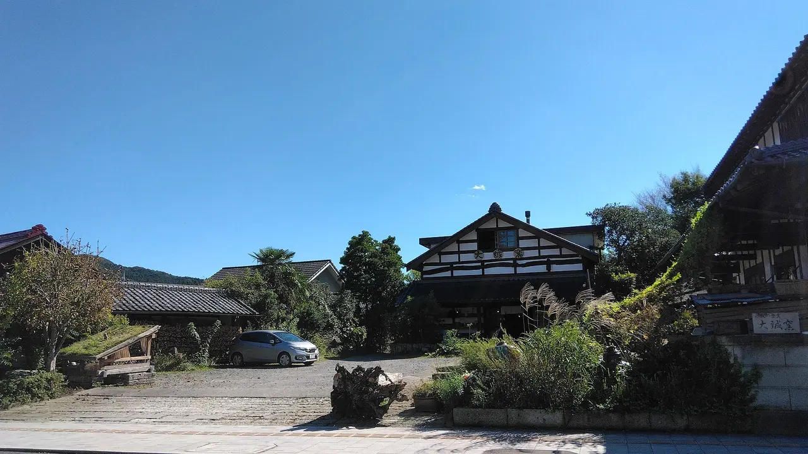
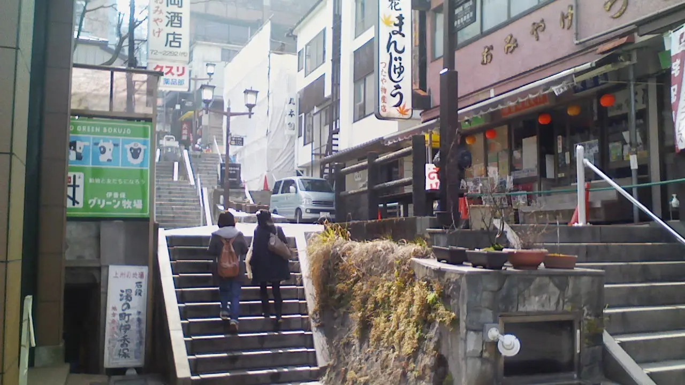
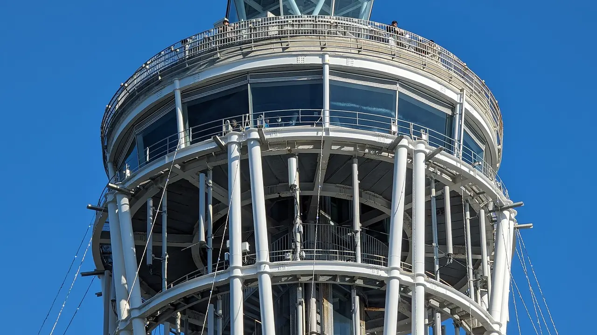

Day trips from Tokyo without the crowds
Most "hidden gem" lists have the same problem: they are lists of places, so you have to work out for yourself whether any of them is what you actually wanted. This is not that. It is five straight swaps. For each of the day trips everyone takes from Tokyo, here is a quieter place that does the same job — the same kind of streets, the same kind of afternoon — at a comparable travel time. If you have already seen the famous one, the swap is what to do next. If you have not, the swap is often the better first visit.

The five swaps
| Instead of | Time | Go to | Time | You still get |
|---|---|---|---|---|
| Kawagoe川越 | ~30 min | Sawara, Chiba佐原 | ~90 min | An Edo merchant townscape — around a canal instead of a main road |
| Kamakura鎌倉 | ~60 min | Sakura, Chiba佐倉 | ~60 min | Samurai houses and a castle site, with almost nobody in them |
| Nikkō日光 | ~2 h | Mashiko, Tochigi益子 | ~2 h | A craft town in the same prefecture, and something to carry home |
| Hakone箱根 | ~85 min | Kinugawa or Ikaho鬼怒川・伊香保 | ~90 min / ~2.5 h | Hot water, without the transport queues |
| Enoshima江の島 | ~60 min | Almost any other island | varies | An island walk — see the numbers below |
The honest caveat. Quieter usually means further, or less to do, or both. Sawara is an hour further out than Kawagoe. Sakura is the same distance as Kamakura but has a fraction of what Kamakura has. That trade is the whole point — you are buying space, and paying for it in travel time or in things to see. If what you want is the famous thing, go to the famous thing.
The swaps, in detail
Kawagoe → Sawara, Chiba

Both are called "Little Edo" and both preserve merchant townscapes, but they are built around different things. Kawagoe is a main street of kurazukuri warehouses and a bell tower, close to Tokyo and correspondingly busy. Sawara is built around a canal — the Ono River — with merchant houses and mud-walled warehouses along both banks, and boats on the water instead of queues on the pavement.
Sawara has the better claim historically. It prospered during the Edo period as an inland port under the Omigawa domain, shipping rice down the Tone River network to Edo, and in 1996 it became the first district in the Kantō region designated a nationally Important Preservation District for Groups of Traditional Buildings. There is a 30-minute guided boat trip along the canal.
Getting there: Sawara Station is on the JR Narita Line — the same line that serves Narita — and the old town is about 15 minutes' walk from the station. Roughly 90 minutes from central Tokyo, or about 30 minutes if you are already at Narita.
✔ The quieter Little Edo, with water instead of traffic, and a genuine national heritage designation.
✘ An hour further out than Kawagoe, and smaller — this is a half-day, not a full one.
Pairs naturally with a Narita layover. See the Chiba guide.
Kamakura → Sakura, Chiba

Kamakura is the default historical day trip and it is heaving, particularly at weekends and in autumn. Sakura is the same distance from Tokyo and almost unvisited by foreign travellers.
What is there: the largest surviving group of samurai residences in the greater Tokyo area, south of Sakura Castle Park. Three houses from the late Edo period — the former Kawara, Tajima and Takei residences — lived in by samurai of the Sakura domain, with the Kawara house believed to be the oldest in the city. The National Museum of Japanese History sits on the former castle grounds, which is a serious museum by any standard and one most visitors to Japan have never heard of.
Getting there: JR Sōbu Line Rapid from Tokyo Station direct to Sakura Station, about 60 minutes, no changes; or Keisei from Ueno to Keisei Sakura in about the same. The samurai houses are about 10 minutes on foot from JR Sakura or 15 from Keisei Sakura.
✔ Same travel time as Kamakura, a fraction of the people, and a major national museum thrown in.
✘ No coastline, no Great Buddha, far fewer temples. If you came to Japan for Kamakura's specific sights, Sakura does not replace them.
Best for a second or third trip to Japan, or for anyone who has already done Kamakura.
Nikkō → Mashiko, Tochigi

These are in the same prefecture and take about the same time, and they are completely different days. Nikkō is shrines, mountains and coach parties. Mashiko is a single long street of pottery kilns, galleries and shops, and you leave with something.
The timing argument is strong this autumn: the Mashiko autumn pottery fair runs 31 October to 3 November 2026, when roughly 50 shops and more than 800 tents fill the town. Outside fair weeks it is quiet — quiet enough that some people find it thin, which is exactly what you are looking for if crowds are the thing you are avoiding.
Getting there: about 50 minutes to Utsunomiya, then a local line or bus. Roughly two hours in total, comparable to Nikkō.
✔ Same prefecture, same travel time, and a completely different kind of day — with tableware to carry home.
✘ During the fair Mashiko is genuinely crowded too. If you want it empty, go on an ordinary weekday.
Full detail in our pottery towns guide. See also the Tochigi guide.
Hakone → Kinugawa, or Ikaho

Hakone is the best-connected onsen area in Japan and that is precisely why it is full. The two swaps do the same job differently. Kinugawa Onsen is about 90 minutes from Asakusa on the Tobu limited express, straight into a station named after the hot spring — the same journey shape as Hakone with fewer people at the other end. Ikaho takes about 2.5 hours, rail to Shibukawa and then roughly 30 minutes of bus, and gives you a town built up a 300-step stone staircase.
✔ Both are direct enough to be day trips, and neither has Hakone's transport queues.
✘ Neither has Hakone's network of railway, cable car, ropeway and boat, which for many people is the actual attraction.
The full comparison, including which towns need a bus and what it costs, is in our car-free onsen guide.
Enoshima → almost any other island

This one has a number attached. Enoshima receives about 8.485 million visitors a year against 368 residents — roughly 23,057 visitors per resident, which makes it, by that measure, the most heavily visited island in Japan. It is an hour from Tokyo and it is worth seeing once. It is not a quiet island walk.
By the same measure Toshima, also in Tokyo Prefecture but out in the Izu chain, gets about ten visitors per resident. That is a factor of two thousand between two islands administered from the same city. The catch is that Toshima is a ferry journey, not a day trip — which is the trade this whole article is about, expressed as starkly as the data allows.
We measured all 388 inhabited islands: the ones you can walk around in a day →, with visitors-per-resident for each so you can see the crowding before you go.
Timing beats destination
Choosing a quieter place helps. Choosing a quieter time helps more, and it is free.
| Do this | Why |
|---|---|
| Go on a weekday | The single biggest difference. Domestic day-trippers are the crowd at most of these places, and they travel at weekends. |
| Avoid Golden Week, Obon and New Year | Late April to early May, mid-August, and the days around 1 January. Everything is full and prices rise. |
| Start early | Coach tours tend to arrive mid-morning. An 07:00 departure buys you two quiet hours. |
| Skip autumn foliage peak at famous sites | Momiji season concentrates enormous numbers into two or three weeks at a short list of places. |
| Go in the rain | Unpopular advice, reliably effective, and canal towns and pottery streets look better wet. |
The Japanese you'll meet
| Japanese | Reading | What it means |
|---|---|---|
| 小江戸 | koedo | "Little Edo" — the label both Kawagoe and Sawara use. |
| 重要伝統的建造物群保存地区 | jūyō dentōteki kenzōbutsugun hozon chiku | Important Preservation District for Groups of Traditional Buildings. A real national designation. |
| 武家屋敷 | buke yashiki | Samurai residence. |
| 城下町 | jōkamachi | Castle town — the shape of Sakura and hundreds of others. |
| 日帰り | higaeri | Day trip, returning the same day. |
| 混雑 | konzatsu | Congestion, crowding. On signs and forecasts. |
| 平日 | heijitsu | Weekday. Often a different price as well as a different crowd. |
| 穴場 | anaba | A little-known good spot. The word Japanese speakers use for exactly this idea. |
Common questions
Is quieter always better? No. These swaps cost you either travel time or things to see. Famous places are usually famous for a reason.
Which swap is the easiest win? Kamakura to Sakura — the same 60 minutes for a fraction of the people.
Which is the biggest step down in things to do? Also Sakura. It is samurai houses and a museum, not a full day of sights.
What if I only have one free day and it is a Saturday? Take the swap rather than the famous place. Weekend crowds are what these alternatives are for.
Do I need a car for any of these? No. All five are reachable by train, though Ikaho needs a bus at the end.
Where to go, what to eat, what to bring home — one Japanese region at a time, with the practical details guides leave out. Free, no spam, unsubscribe anytime.
Sources: Sawara's canal townscape along the Ono River, its Edo-period role as an inland port under the Omigawa domain shipping rice to Edo via the Tone River network, its 1996 designation as the first Important Preservation District for Groups of Traditional Buildings in the Kantō region, the 30-minute canal boat trip, and its position on the JR Narita Line about 15 minutes' walk from Sawara Station and roughly 30 minutes from Narita, from Chiba tourism materials and Japanese travel media. Sakura's samurai residences — the former Kawara, Tajima and Takei houses, all late Edo period and occupied by samurai of the Sakura domain, with the Kawara house believed the oldest in the city — their status as the largest such group in the greater Tokyo area, the National Museum of Japanese History on the former castle grounds, and the approximately 60-minute journeys by JR Sōbu Line Rapid from Tokyo Station and by Keisei from Ueno with the houses about 10 and 15 minutes' walk from the respective stations, from Chiba and national tourism materials. Mashiko's autumn pottery fair dates of 31 October to 3 November 2026 and its roughly 50 shops and 800-plus tents, and the Kinugawa and Ikaho access details, are drawn from our own pottery towns and car-free onsen guides, each of which carries its own sources. Enoshima's approximately 8.485 million annual visitors against 368 residents and Toshima's 3,228 visitors against 337 residents are from NihongoHub's 388-island dataset; the per-resident ratios are our own calculation. Rail times are typical fastest services from central Tokyo and vary by departure and route — check a transit app on the day.